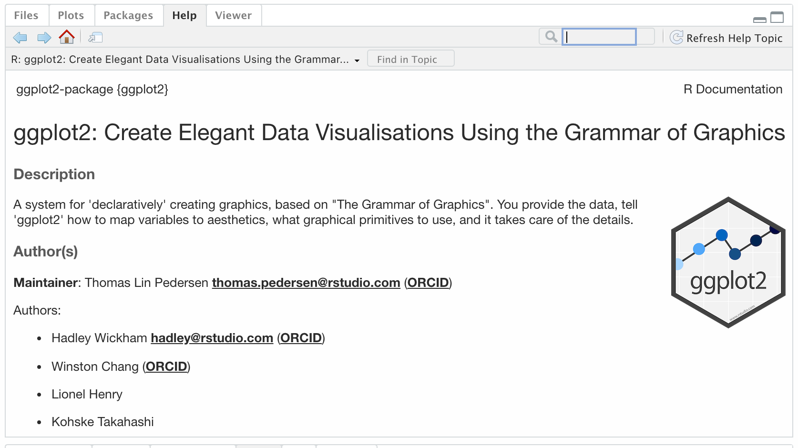
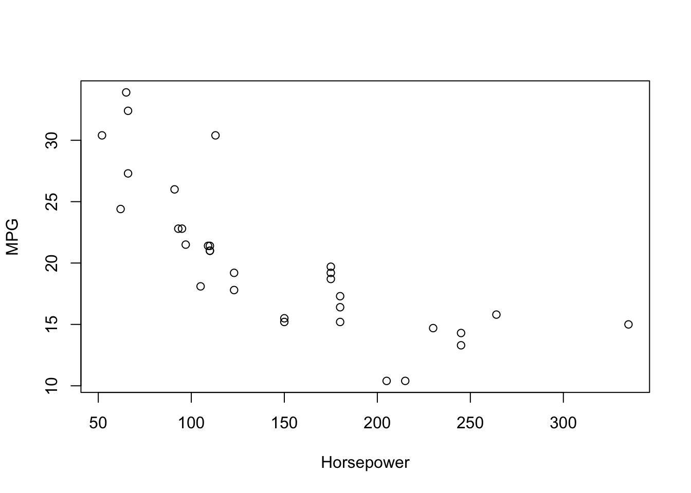
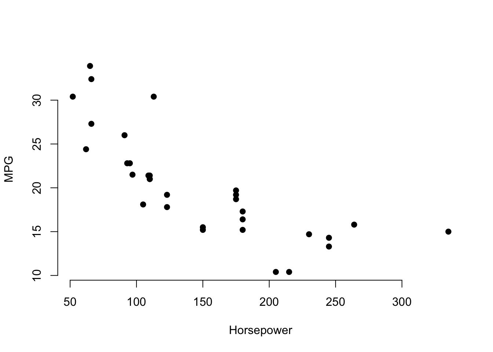
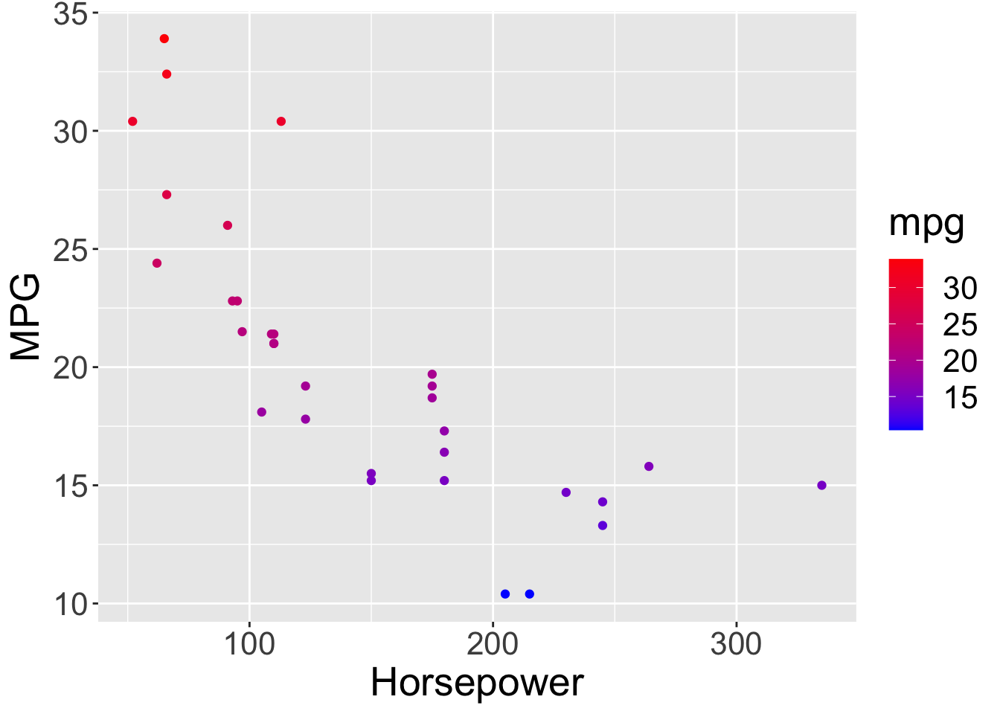

4 Introducing Libraries + Building Your First Data Visualization Using base-R vs. A Library
4.1 About Libraries
One of the benefits of using an open-source program like R is that it allows users to add new functions and features. For instance, if someone wants to improve how R displays output, a user can build a set of functions. If someone wants to add more .
The tidyverse set of libraries has been developed and curated by RStudio; the same company that developed the RStudio graphical user interface.
A library is similar to downloading various apps on your phone. Even though your phone comes with a camera app when you first purchase your iPhone (or any other smart phone), many of us who like to post on Instagram or just want good photos might download other camera or photo-related apps, such as Huji, Focos, Snow, etc. using the App Store (or Google Play Store) because these apps provide more functions compared to the original camera app.
For example, although you can edit your photos using the basic camera app on your iPhone, such as crop or use certain filters, you cannot get the same vintage vibe as taking a picture using the Huji app. Translating this to RStudio language, base R is like the software of your smart phone with the basic apps installed from purchase, whereas libraries are the apps you can download from either the App Store or Google Play Store (depending on what phone you have).
To take advantage of these different “apps” that have been created by scientists and scholars around the world, we have to download the “app.” Downloading the app, you will use the following code: install.packages(LIBRARY NAME)
There are so many different libraries to choose from. To see what libraries are out there, check out the RStudio website (https://www.rstudio.com/products/rpackages/) and we personally like to follow XXX on Twitter who often create different R-packages.
In this book, we will use XX libraries.
4.2 Introducing the Tidyverse Library
We will start with working with the tidyverse library. The tidyverse library consists of a few packages within the library, which is created by Hadley Wickham and his team. The current core tidyverse packages include: ggplot2, dplyr, tidyr, readr, purrr, tibble, stringr, and forcats. For more information about what each of these packages do, you can go onto their website: https://www.tidyverse.org/packages/
Another way to get more information about each of these libraries is through putting a ? in front of library name. Lets try finding more information about the library, ggplot2, which is a library within tidyverse.
The first step involves making sure the library ggplot2 is installed.
install.packages("ggplot2") # you can replace whatever is in the parentheses with another library name If RStudio asks, “Do you want to install from sources the package which needs compilation? (Yes/no/cancel),” you should write yes on the console. This step of downloading libraries only needs to be done once—just like how you only need to download the app once on your smart phone. You can also add a number/hashtag sign to comment inside your code chunk. This number/hashtag sign tells RStudio to not run whatever is after the number/hashtag sign.
The second step is to open your library.
library(ggplot2) # you can replace whatever is in the parentheses with another library name This step should be done every time you make a new R-markdown file. You are asking R-Studio to retrieve the librar(ies) that are already installed on your RStudio. We recommend starting with opening all the librar(ies) you need.
The last step is to add a ? in front of library name.
?ggplot2 # you can replace ggplot2 with any other library nameThis step should be completed only after completing steps 1 and 2. However, you do not have to necessarily complete this step to use the library, in this case, ggplot2. The third step just allows you to see more information about the package.

Because tidyverse is a collection of packages, one cool information is that you do not need to necessarily install all of the libraries separately (i.e., ggplot2, dplyr, tidyr, readr, purrr, tibble, stringr, and forcats). For instance, you do not need to run:
# downloading libraries
install.packages("ggplot2")
install.packages("dplyr")
install.packages("tidyr")
install.packages("readr")
install.packages("purrr")
install.packages("tibble")
install.packages("stringr")
install.packages("forcats")
# opening libraries
library(ggplot2)
library(dplyr)
library(tidyr)
library(readr)
library(purrr)
library(tibble)
library(stringr)
library(forcats)Instead, you can run:
# downloading library
install.packages("tidyverse")# opening library
library(tidyverse)## ── Attaching packages ─────────────────────────────────────── tidyverse 1.3.1 ──## ✓ tibble 3.1.6 ✓ dplyr 1.0.8
## ✓ tidyr 1.2.0 ✓ stringr 1.4.0
## ✓ readr 2.1.1 ✓ forcats 0.5.1
## ✓ purrr 0.3.4## ── Conflicts ────────────────────────────────────────── tidyverse_conflicts() ──
## x dplyr::filter() masks stats::filter()
## x dplyr::lag() masks stats::lag()This shortcut allows you to the same packages (or libraries) as the code chunk above.
4.3 Creating Your First Data Visualization Using base-R vs. ggplot2
As we discussed in Section 3.1, an advantage of using a library is that it provides you with more functions. Again, think about using the camera app that comes with your smart phone vs. an app you can download from either the App Store or Google Play Store. In this section, we will use base-r (i.e., like a camera app that comes with your smart phone) and ggplot2 (i.e., like a camera app that you can download from either the App Store or Google Play Store).
4.3.1 Creating a Scatterplot Using base-r
To create a scatterplot using base-r, we will use the plot function using the mtcars data. This dataset is an open access dataset within R-Studio. The dataset is built-in R and mtcars stands for the Motor Trend Car Road Tests.
Lets first open the dataset.
data("mtcars")Then we can use the plot function to create the scatterplot. We have to add the dataset_name$variable_name.
plot(mtcars$hp, mtcars$mpg,
xlab = "Horsepower", ylab = "MPG") This code allowed us to create a scatterplot where the x-axis is horsepower and the y-axis is MPG (i.e., miles per gallon). The format of the code is plot(variable name of x-axis, variable name of y-axis, xlab = “x-axis title label”, ylab = “y-axis of title label”).
Using the plot function, you can also change the plotting symbols. For example, you can make the plotting symbol a non-filled rectangle, a non-filled circle, an X, a medium-sized filled circle, etc. To receive a full-chart on all the possibilities in base-r, see the following resource: http://www.sthda.com/english/wiki/r-plot-pch-symbols-the-different-point-shapes-available-in-r. You can also include or exclude the boarder around the scatterplot. Lets try creating a scatterplot with a medium-sized filled circle with no boarders around the edges.
plot(mtcars$hp, mtcars$mpg,
xlab = "Horsepower", ylab = "MPG",
pch = 19, frame = FALSE)
The only difference between the code above and this code is the addition of pch = 19 and frame = FALSE. pch = 19 refers to creating a scatterplot with a medium-sized filled circle and frame = FALSE refers to creating a scatterplot with no boarders.
4.3.2 Creating a Scatterplot Using ggplot2
Using the same dataset, mtcars, we will use ggplot2 to graph a scatterplot. As mentioned in the “Introducing the Tidyverse Library” section, we want to make sure that our library, ggplot2 is downloaded and loaded.
library("ggplot2")Then similar to the scatterplot we made using base-r, we will plot how miles per gallon (i.e., MPG) is related to horsepower (i.e., hp). We will set up the parameters by using the aes() function, which stands for aesthetic. The x-axis will be hp and the y-axis will be mpg.
ggplot(mtcars,
aes(x = hp, y = mpg))
You can also add new by using other functions that are part of the ggplot library. We can add functions by using the +.
Lets try using the geom() function to state the kind of graph we want to create. Because we want to create a scatterplot, we are going to use the function geom_point. No arguments are required within the parentheses for geom().
ggplot(mtcars, aes(x = hp, y = mpg)) +
geom_point()
We can also change the size of the text. For example, we will use the theme function to change the size of the text to size 20.
ggplot(mtcars, aes(x = hp, y = mpg)) +
geom_point() +
theme(text = element_text(size = 20))
Moreover, we can use the labs function to label our x- and y-axis.
ggplot(mtcars, aes(x = hp, y = mpg)) +
geom_point() +
theme(text = element_text(size = 20)) +
labs(x = "Horsepower", y = "MPG")
Another function that you can do with ggplot2 is add a color gradient on a specific variable. For example, lets say that you want low MPG to be blue and high MPG to be red. In order to make this function work, we have to (1) state which variable you want to color, which in this case, is MPG and (2) go back to the aes function and write an additional argument. All arguments are separated by ,.
ggplot(mtcars, aes(x = hp, y = mpg, color = mpg)) +
geom_point() +
theme(text = element_text(size = 20)) +
labs(x = "Horsepower", y = "MPG") +
scale_color_gradient(low = "blue", high = "red")
Finally, we will go over the function, facet_grid, which allows you to create graphs by a group. Lets try creating a scatterplot split by the variable, cyl (i.e., the number of cylinders).
ggplot(mtcars, aes(x = hp, y = mpg, color = mpg)) +
geom_point() +
theme(text = element_text(size = 20)) +
labs(x = "Horsepower", y = "MPG") +
scale_color_gradient(low = "blue", high = "red") +
facet_grid(.~ cyl)